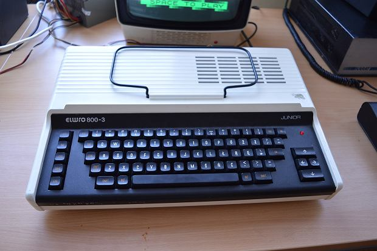
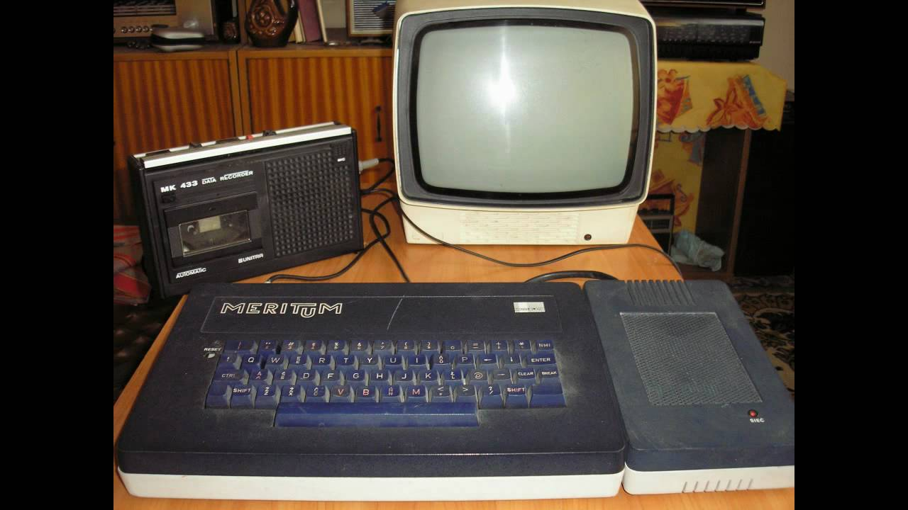
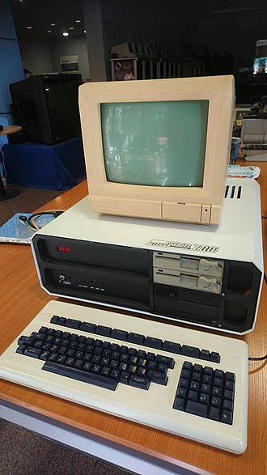

Trochę historii informatyki polskiej...
W roku 1958 zbudowany został w Polsce pierwszy komputer nazwany XYZ. W roku 1961 ruszyła seryjna produkcja komputerów ZAM 2, a w roku 1963 – komputerów Odra 1003. W okresie tu omawianym komputery nazywane były w Polsce maszynami matematycznymi. Do roku 1967 najbardziej znaczącymi jednostkami organizacyjnymi w zakresie budowy komputerów były: Instytut Maszyn Matematycznych, krótko IMM, jednostka Polskiej Akademii Nauk (PAN), Katedra Budowy Maszyn Matematycznych, krótko Katedra BMM, jednostka Politechniki Warszawskiej (PW), oraz Wrocławskie Zakłady Elektroniczne ELWRO.Za początek procesu powstawania komputerów w Polsce można uznać seminarium entuzjastów, które odbyło się w gmachu Instytutu Fizyki Doświadczalnej, przy ulicy Hożej w Warszawie, dnia 23 grudnia 1948. W powstającym w 1948 roku Państwowym Instytucie Matematycznym (od roku 1952 w PAN) zdecydowano się na rozpoczęcie prac perspektywicznych nad budową chociażby jednej maszyny porównywalnej do amerykańskiego ENIAC. W tym celu powołano Grupę Aparatów Matematycznych tego Instytutu (GAM). Pierwszym inżynieryjnym pracownikiem GAM był Leon Łukaszewicz, a wkrótce potem dołączyli do niego jego koledzy ze studiów, Romuald Marczyński i Krystyn Bochenek. Kierownikiem GAM został logik i statystyk Henryk Greniewski. Dla zbudowania takiego komputera nie było środków – ani zaplecza technicznego, ani sprzętu elektronicznego, ani doświadczenia. Jedyną szansę dawały entuzjazm i domniemany talent kilku dopiero co promowanych inżynierów.Pierwszym osiągnięciem GAM było zbudowanie w roku 1954 analogowego Analizatora Równań Różniczkowych (można go zobaczyć w Muzeum Techniki w Warszawie). Składał się on z ośmiu sumatorów, ośmiu integratorów, sześciu multiplikatorów i sześciu transformatorów funkcji. Wkrótce ARR znalazł wielu użytkowników w zakresie badania drgań w nieliniowych układach mechanicznych. Eksploatacja ARR skupiła wokół siebie wielu matematyków, w tym Antoniego Mazurkiewicza i Tomasza Pietrzykowskiego.Analizator ARR był dowodem, że budowa dużych maszyn liczących w Polsce jest możliwa. Uznanie, z jakim spotkał się ARR, wyraziło się przyznaniem za niego w 1955 roku Nagrody Państwowej II stopnia dla Leona Łukaszewicza i jego współpracowników, którymi byli: Andrzej Łazarkiewicz, Andrzej Świtalski, Antoni Ostrowski i Jan Ławrynowicz.Kierowana przez Romualda Marczyńskiego pierwsza próba budowy komputera, nazwanego EMAL, nie została doprowadzona do końca. Zasadniczym tego powodem była zła jakość dostępnych lamp elektronowych i łączówek. Programy dla komputera EMAL przygotowali Adam Empacher i Andrzej Wakulicz. W początku 1956 roku wszystkie siły GAM zostały połączone w jeden zespół, kierowany przez Leona Łukaszewicza, z zadaniem ponowienia próby zbudowania komputera. W rezultacie został zaprojektowany, wykonany i w roku 1958 uruchomiony pierwszy komputer działający w Polsce, nazwany XYZ.Wydarzenie to, jedno z ważniejszych w historii polskiej informatyki, dowodziło, ze budowa takich komputerów w kraju jest możliwa. Wywołało ono zainteresowanie szerszych kręgów społeczeństwa, ośrodków naukowych, a również władz gospodarczych. Przydzielono więc znaczne środki na rozwój komputerów.W zespole projektującym XYZ wziął udział Leon Łukaszewicz, jako jego kierownik, a również Stanisław Majerski, Zdzisław Pawlak, Jerzy Fiett, Wojciech Jaworski i Zygmunt Sawicki.Na bazie XYZ powołano Biuro Obliczeń i Programów, krótko BOP. Był to pierwszy w Polsce ogólnie dostępny ośrodek usługowy stosujący komputer do obliczeń naukowych i technicznych. Pomimo że XYZ pracował na trzy zmiany, popyt na usługi BOP szybko przekroczył jego możliwości. Kierownikami BOP byli Jerzy Waśniewski, a po nim Krzysztof Moszyński. W tym czasie GAM przekształcił się najpierw w samodzielny Zakład Aparatów Matematycznych PAN, w skrócie ZAM, a wkrótce potem, w IMM. Do roku 1966 kierował nimi Leon Łukaszewicz. Po budowie XYZ jego twórcy przystąpili, z dużym rozmachem, do próby przemysłowego wdrożenia swych osiągnięć. W tym celu utworzono Zakład Produkcji Doświadczalnej Maszyn Matematycznych przy IMM, w skrócie Zakład Doświadczalny IMM. Zatrudniono w nim wkrótce zespół inżynierów o dużym doświadczeniu w produkcji profesjonalnego sprzętu elektronicznego.Pierwszym zadaniem tego Zakładu było powielenie udoskonalonej wersji XYZ, nazwanej ZAM 2. W latach 1961–1964 wyprodukowano w Zakładzie Doświadczalnym IMM serię dwunastu tych komputerów. Komputery ZAM 2 miały, podobnie jak XYZ, pamięci bębnowe (prekursory pamięci dyskowych), a ponadto szybkie pamięci ultrasoniczne. W tych ostatnich średni czas oczekiwania na jedno zapisane słowo wynosiło 0,5 milisekund. Zakładając, że na wykonanie jednej operacji arytmetycznej na liczbach 8-cyfrowych potrzebne są dwa dostępy do pamięci szybkiej, komputery ZAM 2 wykonywały do około 1000 operacji na sekundę. Natomiast wszystkie inne komputery budowane do roku 1965 włącznie miały jedynie pamięci bębnowe, w których to średni czas oczekiwania wynosił około 5 milisekund. Wobec tego komputery te wykonywały do około 100 operacji na sekundę.Nie było to wtedy mało. Licząc, że jeden rachmistrz pracując w biurze wykonuje jedną operację arytmetyczną średnio w 20 sekund i pracuje przez 8 godzin dziennie. Wtedy, teoretycznie, jeden komputer pracujący na trzy zmiany, jeśli ma pamięć jedynie bębnowa, może zastąpić do 6000 rachmistrzów, a komputer ZAM 2 – do 60.000 rachmistrzów. Ponadto komputery liczą na ogół bez pomyłek.Maszyny ZAM 2 były też w latach 1961–1965 najlepiej oprogramowanymi komputerami produkowanymi w Polsce. W szczególności zawierało ono System Adresów Symbolicznych SAS oraz System Automatycznego Kodowania SAKO zwany też polskim Fortranem. Implementacja SAKO na komputerach tak niewielkich jak XYZ i ZAM 2 było nie lada sztuką. Okazało się to być osiągnięciem pionierskim w stosunku do wszystkich sąsiadów naszego kraju. W szczególności, zdaniem prof. M. Kiełdysza, prezesa Akademii Nauk ZSRR, system ten przewyższał wszystkie podobne systemy wdrożone do praktyki w Związku Radzieckim.SAS i SAKO opracowane zostały w latach 1957–1960 przez zespoły w których, w różnych okresach, brali udział Leon Łukaszewicz, Antoni Mazurkiewicz, Jan Borowiec, Ludwik Czaja, Jowita Koncewicz, Maria Łącka, Tomasz Pietrzykowski, Stefan Sawicki, Jerzy Swianiewicz, Piotr Szorc, Alfred Szurman, Józef Winkowski i Andrzej WiśniewskiW roku 1961 Instytut dostał zadanie opracowania nowoczesnego komputera do przetwarzania masowej ilości danych i nadającej się przez to np. do zarządzania przedsiębiorstwami, do rozliczeń bankowych i do prowadzenia racjonalnej gospodarki komunalnej.W tym celu w roku 1963 powstał prototypowy komputer ZAM-41. Wyposażony on był w opracowane w Instytucie szybkie pamięci ferrytowe, pamięci bębnowe oraz pamięci na taśmach magnetycznych. Te ostatnie były dość powolne, lecz mogły służyć do przechowywania bardzo dużej ilości danych. Ponadto komputer ZAM 41 mógł wykonywać kilka niezależnych zadań jednocześnie.W latach 1967–1970 seria szesnastu komputerów ZAM-41 została wyprodukowana przez Zakład Doświadczalny IMM. Były to w tym okresie jedyne komputery krajowe o wymienionych wyżej możliwościach. Wokół każdej z nich zorganizowany został ośrodek obliczeniowy, który wykształcił wielu specjalistów w zakresie zastosowań informatyki do celów gospodarczych. W przeciwieństwie do dzisiejszych komputerów osobistych, komputery takie jak ZAM 2 oraz ZAM 41 składały się z kilku do kilkunastu dużych szaf i były, wraz z ich eksploatacją, bardzo kosztowne. Natomiast ich szybkość liczenia i pojemność pamięci bębnowych były, w porównaniu z obecnymi, niewielkie. Pomimo to rozwiązywano na nich dość duże i trudne zadania.W roku 1963 Instytut liczył już, wraz z jego Zakładem Doświadczanym, około 800 pracowników. W tym też roku Instytut został przeniesiony w całości z PAN do urzędu Pełnomocnika Rządu do spraw informatyki. Miało to zapewnić Instytutowi lepszą opiekę, lecz nadzieje te nie zostały spełnione.Po roku 1966 produkcja różnych komponentów komputerów, rozpoczęta w Zakładzie Doświadczalnym IMM, zaczęła stopniowo, wraz z kadrą, przechodzić do przemysłu. Przykładowo, pamięci taśmowe typu PT-2, zapoczątkowane w IMM, były następnie wyprodukowane w ilości około pięciuset egzemplarzy w Zakładach Radiowych Rawar. Technologia wytwarzania rdzeni ferrytowych, opracowana w Zakładzie Doświadczalnym IMM, przekazana została do Zakładów Materiałów POLFER. Produkcja pamięci bębnowych PB-7 przeszła wraz ze znaczną częścią IMM i jego Zakładu Doświadczalnego do Zakładów ERA, tworząc w nich niezależny pion informatyki. Ostatecznie, przeważająca część IMM i cały jego Zakład Doświadczalny zostały wchłonięte przez przemysł.
Przykłady polskich komputerów

Elwro 800 Junior - komputer osobisty zgodny z ZX Spectrum przeznaczony dla szkół do nauki informatyki w Polsce. Stworzony w wyniku konkursu ogłoszonego przez Ministerstwo Oświaty i Wychowania w drugiej połowie lat 80. XX wieku. Zaprezentowany po raz pierwszy na Międzynarodowych Targach Poznańskich w roku 1986 i od tego też roku produkowany przez zakłady Elwro z przeznaczeniem dla szkół. Komputer został zaprojektowany przez zespół naukowców z Instytutu Automatyki Politechniki Poznańskiej, wygrywając z konkurencyjnymi modelami komputerów szkolnych. Produkowany był w Zakładach Elektronicznych ELWRO we Wrocławiu na zlecenie Ministerstwa Oświaty i Wychowania, które zakładało, że komputer ma być w pełni kompatybilny z ZX Spectrum. Wykorzystywano w jego produkcji podzespoły krajowe lub z pierwszego obszaru dewizowego. Junior dysponował m.in. możliwością pracy w sieci, co stanowiło o przekroczeniu przez niego założeń ministerialnych. Produkcję komputera podjęto w rok po jego prezentacji; zamówienie Ministerstwa na rok 1987 ustalało produkcję na 3,5 tysiąca komputerów. Dystrybucją i instalacją Juniorów w szkołach, jak też szkoleniem w zakresie obsługi komputerów zajmowała się Centrala Zaopatrzenia Szkolnictwa. Szacowano, że do roku 1989 Elwro będzie w stanie produkować 30 tysięcy Juniorów rocznie. W roku 1986 do szkół przekazano 4,5 tysiąca komputerów, wyposażonych w przetłumaczone wersje pakietów LOGO i Turbo Pascal.Inne źródła twierdzą, że wyprodukowano ok. 14 tysięcy, z zaplanowanych 30 tysięcy. Dzięki temu uczono informatyki we wszystkich ówczesnych szkołach średnich, oraz części podstawowych. Szacuje się, że styczność z komputerem miało ok. miliona Polaków.Działał pod kontrolą systemu operacyjnego CP/J – wersji sieciowej CP/M. Wbudowany interpreter języka BASIC. W jednym z trybów pracy był programowo zgodny z ZX Spectrum. Komputer ma obudowę zaadaptowaną z organków elektronicznych Elwirka.Wyprodukowano 13 696 komputerów Elwro 800 Junior, co potwierdza raport Najwyższej Izby Kontroli z dnia 27 marca 1991 roku.Elwro 804 Junior PC wyprodukowano prawdopodobnie (początkowo nie miały tabliczki znamionowej) nie więcej niż 148 lub 150 sztuk.

Meritum- rodzina komputerów osobistych wzorowana i kompatybilna z TRS-80 Model I (BASIC Level II) produkowana w latach 80. XX wieku przez Zakłady Urządzeń Komputerowych Mera-Elzab w Zabrzu przy współpracy firmy polonijnej ITM z Krakowa. Wyprodukowano trzy modele komputera: Meritum I, Meritum II oraz tylko w serii próbnej Meritum III.Był pierwszym masowo produkowanym małym komputerem w Polsce.Znalazł zastosowanie jako sterownik przemysłowy, w instytucjach badawczych, a w szkołach jako narzędzie nauczania informatyki. Nazwa komputera łączy w sobie Mera i ITM.Nigdy nie zdobył popularności, głównie ze względu na małą liczbę wyprodukowanych egzemplarzy, gorsze parametry techniczne od innych dostępnych na rynku urządzeń i małą dostępność oprogramowania. Często zarzucaną wadą był brak trybu graficznego.Komputer w momencie debiutu był już konstrukcją przestarzałą bazująca na projekcie z roku 1977. Był rozwiązaniem kompromisowym w czasach kryzysu i braku dostępu do nowoczesnych komponentów. Szczególnie w pierwszej połowie lat 80. XX wieku, kiedy nie było żadnej alternatywy był ciekawą propozycją dla odbiorców potrzebujących małego systemu komputerowego. Później wraz z pojawieniem się innych rozwiązań stawał się coraz bardziej archaiczny pomimo wprowadzanych modyfikacji.W materiałach producenta, a potem powielana w literaturze znajduje się informacja, że komputer był wzorowany na TRS-80 Model II. Jest to nieścisłość, ponieważ chodzi o TRS-80 Model I, ale z drugą 12 KiB wersją ROM z BASIC licencjonowanym od Microsoft. Tandy Corporation używała oznaczenia tej wersji jako Level II w odróżnieniu od historycznie pierwszej 4 KiB wersji ROM Level I. Specyfikacja TRS-80 Model II znacząco odbiega od Meritum, w szczególności Model II posiadał tryb tekstowy 80×24, gdy Meritum 64×16 typowy jedynie dla urządzeń bazujących na Model I.

MiSter Z80- mikroprocesorowy sterownik przemysłowy produkowany w latach 1985-1989 w Zakładach Elektroniki Górniczej w Tychach. W latach 1987-1988 rozpoczęto wprowadzanie nowego systemu miSTER Z80/ComPAN.Podstawowe zastosowanie systemu, do którego został zaprojektowany i wdrożony do produkcji, to sterowanie i kontrola pracy urządzeń przemysłowych w czasie rzeczywistym. Jednak jego budowa i zastosowane oprogramowanie sprawiły, że mógł być i był stosowany także jako:
- - komputer biurowy
- - komputer do obliczeń naukowo-technicznych
- - system programowania i uruchamiania systemów operacyjnych
- - system rejestracji, przetwarzanie i wizualizacji danych